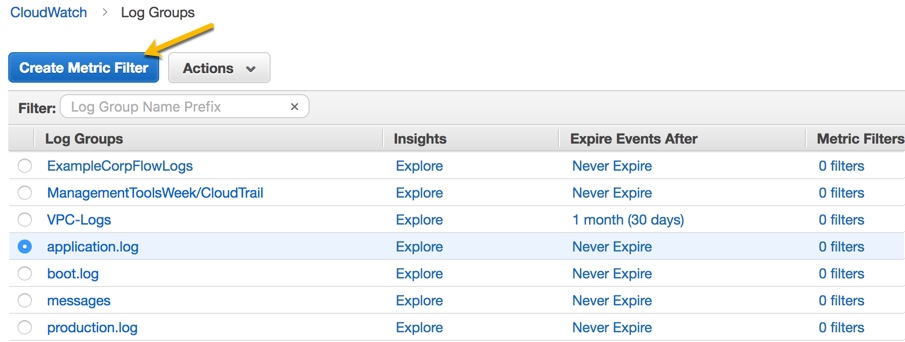
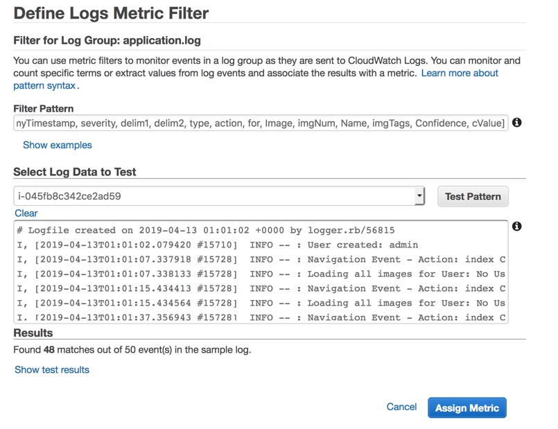
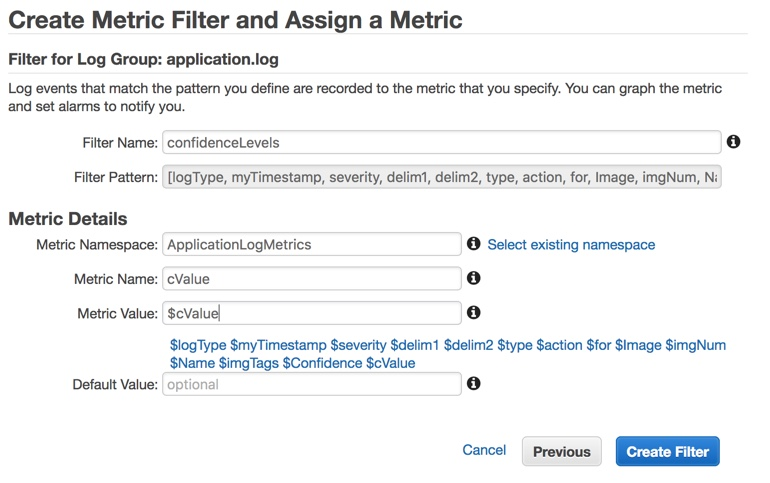

실습4. 제목
실습에 대한 설명을 적습니다.
큰제목
- 순서를 가이드합니다.
Generate metrics from logs
Generate Metrics from Logs
Traditional application development emits events in the form of logs. Use CloudWatch we can generate metrics from our logs using pattern matching. By generating metrics based on observed log messages we can increase the value of our CloudWatch logs by providing visualizations of the metric data through dashboard, and providing alerts when metrics breach baseline thresholds. Using the AWS CLI or API you can publish your own custom metrics.
Metric filters are created using the same filter and pattern syntax that is used when browsing log streams in the console.
Create a Confidence metric
Monitoring for Business Outcomes Titus Grone wants to know that ExampleCorp is delighting our customers. Feedback from the customer indicates that accuracy of items identified in the upload images is the greatest source of satisfaction when it works well, and frustration when it does not. Focus groups indicate that it is better to not have misidentified (low confidence) objects.
He wants to track the image recognition confidence levels as a measure of how accurate the ExampleCorp application is performing. He will use this information to help determine where to focus development efforts.
4.1 Create the Log Metric
- Navigate to the CloudWatch Logs dashboard at this link.
- In the contents pane, select the application.log group by clicking on the radio button next to it, and then choose Create Metric Filter. 
- On the Define Logs Metric Filter screen, for Filter Pattern, type:
- [logType, myTimestamp, severity, delim1, delim2, type, action, for, Image, imgNum, Name, imgTags, Confidence, cValue]
- To test your filter pattern, for Select Log Data to Test, select the log group to test the metric filter against, and then choose Test Pattern.
- Under Results, CloudWatch Logs displays a message showing how many occurrences of the filter pattern were found in the log file. To see detailed results, click Show test results.
- Choose Assign Metric 
- On the Create Metric Filter and Assign a Metric screen,
- For Filter Name type confidenceLevels
- Under Metric Details, for Metric Namespace, type ApplicationLogMetrics
- For Metric Name, type cValue
- Choose Show advanced metric settings
- For Metric Value choose $cValue.
- Leave the Default Value undefined, and then choose Create Filter. 
4.2 Review the resulting metrics
- Navigate to metrics in the left side navigation bar of the CloudWatch console or by clicking this link.
- Under Custom Namespaces you will see your ApplicationLogMetrics namespace.
- Chose Metrics with no dimensions
- Then choose Metrics with no dimensions
- Then select cValue
- Choose the Graphed Metrics tab and examine the differences in reported values when you change the Statistic in use by selecting alternatives from the pull down list beneath it.
- Change the Period to 10 Seconds and the Statistic to Average and examine the differences in reported values.
4.3 Create a dashboard
- Choose Actions in to top right corner of the page and choose Add to dashboard
- In the Add to dashboard dialog
- Under Select a dashboard choose Create new and enter ExampleCorp in the Dashboard name text box, and then choose the check mark icon next to the text box to confirm your choice.
- Under Select a widget type choose Stacked area
- Under Customize widget title replace the prepopulated value cValue with confidence
- Choose Add to dashboard
- On the Dashboards page, choose Save dashboard